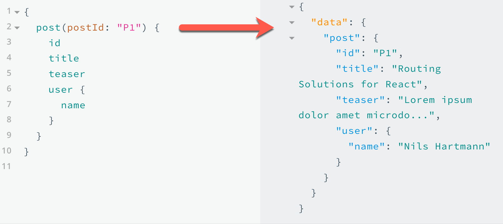

Advanced React Training
Nils Hartmann | @nilshartmann
Preparation
git clone https://github.com/nilshartmann/react-training
cd react-training/blog-example/workspace
npm install
Slides: react-training/2020_react_and_graphql.html
Nils Hartmann
https://nilshartmann.net / @nilshartmann
Freelance software developer, trainer and coach from Hamburg
Java
JavaScript, TypeScript
React
Single-Page-Applications
GraphQL
Agenda
- Intro: React Hooks in one hour
- Part I: Testing React Applications
- Part II: Pattern (HOCs, Render Properties, Custom Hooks)
- Part III: Client-side Routing with React Router (Overview)
- Teil IV: Statemanagement: Redux and React Context
- Part II: React Components
- Part III: React Components: Hierarchies and Applications
- Part IV: Reading and writing data from a server (http)
- Part V: Testing React Applications (Overview)
- Part VI: React Applications with TypeScript
- Part VIII: GraphQL Clients with Apollo React
-
More topics to discuss
- Performance optimizations
- Redux
- Context API
Every time: Questions and discussions!
Intro
React Hooks in One Hour
Live Coding
Part I
Testing React Applications
- Example: Coverage Report
What do we test?
- UI-independent logic (for example services, backend calls)
- Rendering (is the list of blog post correctly rendered? is the markup as we want it?)
- Interactions (are my event handlers working and correctly set?)
- Behaviour in the browser (z.B. correct rendering, Browser-spezific JavaScript, Working with browser artefacts, such as history, Title, Scrollbars etc)
What do we test?
- UI-independent logic (for example services, backend calls)
- Rendering (is the list of blog post correctly rendered? is the markup as we want it?)
- Interactions (are my event handlers working and correctly set?)
- Behaviour in the browser (z.B. correct rendering, Browser-spezific JavaScript, Working with browser artefacts, such as history, Title, Scrollbars etc)
Jest
"Delightful JavaScript Testing" ( https://jestjs.io/)
Complete Test solution for React (and others):
- Test Runner
- Specs, Assertions, Mocks
- Code Coverage
- "Snapshot testing"
Jest
Example: A simple testcase
// sum.js (or sum.ts)
export const sum = (a,b) => a+b;
// sum.test.js
import {sum} from '../sum.js';
test('sum of 2 and 2 is 4', () => {
expect(sum(2, 2)).toBe(4);
});
test('sum of 2 and 2 is not 3', () => {
expect(sum(2, 2)).not.toBe(3);
});
Jest
Testcases
test or
it
test('it should work', () => {
expect(...).toBe(...);
});it('it should also work', () => {
expect(...).toBe(...);
});Jest
Expectations and Matchers
expect() returns an Expectation obects, that contains several
Matcher functions:
expect(actual).toXyz(expected);
// for example:
expect("Hello Jest").toBe("Hello Jest"); // => ok
Some Matchers
// Compare identity
expect(actual).toBe(expected);
// Compare value:
expect(actual).toEqual(expected);
// true / false / null:
expect(actual).toBeTruthy();
expect(actual).toBeFalsy();
expect(actual).toBeNull();
// Length (Array oder String)
expect(actual).toHaveLength(123);
Jest
Mock Functions
-
jest.fn()creates a mock function// Returns undefined when executed const aMockFn = jest.fn(); aMockFn("huhu"); // => undefined expect(aMockFn).toHaveBeenCalled()); expect(aMockFn.toHaveBeenCalledWith("huhu")); -
Implementation of the mock function can be passed as parameter:
const aMockFn = jest.fn( param => `Hello, ${param}` ); console.log(aMockFn('World')); // => Hello, World
Testing React Components
Rendering-only
React Test Renderer
https://www.npmjs.com/package/react-test-renderer
Renders React Components into JSON Objekts (without DOM):
import renderer from 'react-test-renderer';
const component = renderer.create(
<PostList posts={somePosts} />
);
console.log(component.toJSON());
{ type: 'div',
props: {},
children: [
{ type: 'buton', props: {}, children: [Object] },
{ type: 'article', props: [Object], children: [Object] },
{ type: 'article', props: [Object], children: [Object] }
]
}
"Snapshot Testing" with Jest
expect(obj).toMatchSnapshot() compares a JSON-Object with a stored object
in a file:

Snapshot Testing with Jest and React
import renderer from 'react-test-renderer';
test('it should render correctly', () => {
const somePosts = [ . . . ];
const component = renderer.create(
<PostList posts={somePosts} />
);
expect(component.toJSON()).toMatchSnapshot();
});
Testing React Components #2
Interactions
react-testing-library
Simple and complete React DOM testing utilities that encourage good testing practices." ( https://github.com/testing-library/react-testing-library)
Philosophy: tests are written from a user perspective. To find your elements you want to test, you use properties the user also sees (like labels, etc)
anderes beispiel, am besten nur editor
import { render, fireEvent } from "@testing-library/react";
it("it should switch between views", async () => {
fetch.mockResponse(JSON.stringify(mockPosts));
const { getByText, findByText } = render(<App />);
const addPostButton = await findByText("Add Post");
fireEvent.click(addPostButton);
// Post Editor should be visible
expect(getByText("Create Post")).toBeInTheDocument();
});
Testing with fetch
Challenges:
- Asynchronous code (not limited to fetch)
- Server mocking
Dealing with asynchronous code
Part II
Pattern (Higher-Order-Components, Render Properties, Custom Hooks)
Example: Loading Data in React
Naive and "specialized" implementation, no reuse, just for loading a Blog Post...
export function BlogLoader() {
const [post, setPost] = React.useState<BlogPost | null>(null);
const [loading, setLoading] = React.useState(false);
React.useEffect(() => {
setLoading(true);
demoFetch("http://localhost:7000/posts/P7")
.then(response => response.json())
.then(json => {
setLoading(false);
setPost(json);
})
.catch(err => console.error("Loading data failed: " + err));
}, []);
if (loading || !post) {
return <LoadingIndicator>Post is loading. Please wait.</LoadingIndicator>;
}
return <SinglePost title="Blog Post (Hook Example)" post={post} />;
}
Example: Loading Data in React
Requirements
- We fetch data from a specified URL
- While data is loading, a Loading Indicator should be shown
- When the data has been loaded it should be rendered by a specified component
- Should be typesafe (TypeScript)
- Code should be reusable and work from and with different components
- The target component can receive additional props
Approach #1: Higher-Order-Components
A higher-order component is a function that takes a component and returns a new component.(Docs)
Made popular by Redux (?)
Typically used with class components (?)
Higher-Order Components (HOC)
The Higher-Order-Component is responsible for the rendering of a wrapped component
- The HOC can delay (or skip at all) rendering of the wrapped component
- The HOC can access all props
- The HOC can add properties for the wrapped component or can remove some
Example: Higher-Order Components (HOC)
We have a Component (SinglePost) that displays a Post. The component has no idea where the data comes from
There is a HOC'd version of the component that is responsible for loading the data
As a user of the HOC'd version it is transparent that dataloading is done
// SinglePost (displays a single blog post):
function SinglePost({title, post}: { title: string, post: BlogPost}) {
return <article>...render post...</article>;
}
// wrap with our dataloader HOC
export default withDataLoader("post", SinglePost);
// Usage (Note: SinglePost is the HOC'd component)
import SinglePost from "./SinglePost";
// we have an additional property (url) here that is NOT defined on SinglePost,
// on the other hand we have no post-Property here, that is required on the original SinglePost
// component...
<SinglePost title="Single Post HOC" url="http://..." />
Example: Higher-Order Components (HOC)
Step 1: A simple HOC...
// Step 1: simply wrap a component (no extra functionality, demo only).
function withDataLoader(RawComponent) {
return function DataLoader(props) {
// Use {...this.props} to forward all properties that the HOC received
// to the target (raw) component
return <RawComponent {...this.props} />
}
}
function MyComponent() { ... }
// same as MyComponent, only with a wrapper around it
const WrappedComponent = withDataLoader(MyComponent);
Example: Higher-Order Components (HOC)
Step 2: Implement the HOC
function withDataLoader(RawComponent) {
return function DataLoader(props) {
const [data, setData] = React.useState<T | null>(null);
const [loading, setLoading] = React.useState(false);
React.useEffect( () => fetch(props.url).then(...data logic as seen... ));
if (loading) { return <LoadingIndicator /> }
// invoke target component
return <RawComponent {...props} data={data} />
}
}
Example: Higher-Order Components (HOC)
Step 3: Using the HOC
import withDataLoader from ". . .";
// SinglePost does not know anything about a url, only the post and the title
function SinglePost({post, title}) { . . .};
export default withDataLoader(SinglePost);
import SinglePost from ". . .";
// When using the HOC'd SinglePost we pass in the URL but NOT the post!
//
<SinglePost url="..." title="A single post" />
Problems with HOCs
- Hard to understand and to write
- "magically" added properties
- wrapper components
- colliding property names (our component takes a 'post' and 'user' property, but the HOC passes a 'data' property 😢)
Hard to type when adding properties (TypeScript), esp. when adding and removing properties
Approach #2: Render Properties
Made popular by React Router (?)
Used both in class and function components
Example: Data Loader
Step 1: The Loading Indicator
Remember: you can pass React components as properties to other components
function DataLoader({ loadingComponent }) {
const [data, setData] = React.useState<T | null>(null);
const [loading, setLoading] = React.useState(false);
React.useEffect( () => fetch(props.url).then(...data logic as seen... ));
if (loading) {
return loadingComponent;
}
...
}
// Usage
function App() {
return <DataLoader loadingComponent={<LoadingIndicator/>} />
}
Example: Data Loader
Step 2: The Data
How about this?
// Usage
function App() {
return <DataLoader loadingComponent={<LoadingIndicator/>}
dataComponent={<SinglePost />}
/>
}
How does DataLoader pass the loaded Post to SinglePost?
Example: Data Loader
Step 2: The Data
How about this?
// Usage
function App() {
function renderDataComponent(post) {
return <SinglePost post={post} />
}
return <DataLoader
loadingComponent={<LoadingIndicator/>}
renderDataComponent={renderDataComponent}
/>
}
What if we pass a callback function to DataLoader that gets the loaded data and returns the SinglePost for it?
Example: Data Loader
Step 2: The Data
function DataLoader({ loadingComponent, renderDataComponent }) {
const [data, setData] = React.useState<T | null>(null);
const [loading, setLoading] = React.useState(false);
React.useEffect( () => fetch(props.url).then(...data logic as seen... ));
if (loading) {
return loadingComponent;
}
return renderDataComponent(data);
} Now we can load the data, pass it to the callback function (renderDataComponent) and render the returned component!
Property 'renderDataComponent' is called a render property (because it renders a component)
Example: Data Loader
Step 2: Variation: Function as Children
What about this one?
// Usage
function App() {
return <DataLoader loadingComponent={<LoadingIndicator/>}>
{ post => <SinglePost post={post} /> }
<DataLoader/>
}
} children is a regular property and thus can be used as a render property too!
Example: Data Loader
function DataLoader({ loadingComponent, children }) {
const [data, setData] = React.useState<T | null>(null);
const [loading, setLoading] = React.useState(false);
React.useEffect( () => fetch(props.url).then(...data logic as seen... ));
if (loading) {
return loadingComponent;
}
// children is a function!
return children(data);
} You can use a named property, the children or both - depending on your needs.
Custom Hooks
You can write own ("custom") hooks for common tasksExamples: Loading data, dealing with native dom (setting title of your browser for example)
Custom Hooks
-
...their names have to start with
use- (otherwise the linter cannot check them, because it doesn't recognize them
- ...can be used in functional components and other hooks
- ...expected "normal" function arguments (not necessary an object as in function component signatures)
- ...can invoke other (custom) hooks
- ...you can freely choose any return type (no restrictions)
Example: A Custom Hook for loading data
export default function useLoader<T>(url: string) {
const [data, setData] = React.useState<T | null>(null);
const [loading, setLoading] = React.useState(false);
React.useEffect(() => {
setLoading(true);
demoFetch(url)
.then(response => response.json())
.then(json => {
setLoading(false);
setData(json);
})
.catch(err => console.error("Loading data failed: " + err));
}, [url]);
if (loading || !data) {
return { loading: true };
}
return {
loading: false,
data
};
}
Usage of Custom Hook
function App() {
const postData = useLoader<BlogPost>("http://localhost:7000/posts/P7");
if (postData.loading) {
return <LoadingIndicator>Post Loading...</LoadingIndicator>;
}
return <SinglePost title="Blog Post (Custom Hook)" post={postData.data} />;
}
Consequences
What does HOCs vs Render Properties vs Hooks mean for our components and the architecture of our application?
Client-side Routing
Overview of React Router
Why routing?
Map URLs to Components
(Navigation through the application without server round-trips!)
URLs can contain state of the application
What "Page" is visible (Blog List, Add Form or Blog Post)?
Which blog post should be rendered (postId)
React Router
- Current version 5.1: https://reacttraining.com/react-router/
- Not part of React
- but de-facto Standard
- Since Version 5.1 with Hooks API (useParams, useLocation, useHistory)
- React Router v6 changes API slightly, add news features but is not stable yet
The Router Object
Top-Level object, that needs to be included at the top of the application's component hierarchy
Mulitple implementations that differ how they interact with URL and browser history:
-
HashRouter: adds the path after appended hash (#/post/1)
👉Example: check network request after changing the URL -
BrowserRouter: puts the path directly in the URL (/post/1)
(You need to configure your web server accordingly)
import {HashRouter as Router} from "react-router-dom";
const app = <Router><App/></Router>;
ReactDOM.render(app, document.getElementById(...));
Which component should be rendered for a path?
The Route object maps paths to components
-
Can be used whereever you want to select a component based on a path
-
comparable with an "intelligent"
iforswitchstatement - can be used everywhere in your components
-
comparable with an "intelligent"
-
Use the
pathattribute to specify the path that should match when the component should be rendered - Specify the component as children of the Route component
import {HashRouter as Router, Route} from "react-router-dom";
const app = <Router>
<Route path="/post/:postId"><BlogPostPage /></Route>
<Route path="/add"><AddPostPage onAdd={...} /></Route>
<Route path="/" exact><BlogListPage /></Route>
</Router>;
ReactDOM.render(app, document.getElementById(...));
Background: Paths
In the Route component you specify a path, that is compared against the current URL
-
Paths by default are valid for parts of strings, but you can change the behaviour by
adding
exact - A Route without
pathmatches always
// matches / and /post
<Route path="/">...</Route>
// matches only /
<Route path="/" exact>...</Route>
// matches any URL:
<Route>...</Route>
- A Path can contain variable segments:
<Route path="/posts/:postId"><BlogPostPage/></Route>
-
Values of the variables can be read using the
useParamshook in your component:
import { useParams } from "react-router";
function BlogPostPage() {
const params = useParams();
// params.postId contains the id from the URL
Switch
- If multiple path expression match, multiple components will be rendered (for example "/" and "/post")
-
Switchensures that only the für component will be rendered (like regular switch with a break after each case)
import {HashRouter as Router, Route, Switch} from "react-router-dom";
const app = (
<Router>
<Switch>
<Route path="/post/:postId"><BlogPostPage /></Route>
<Route path="/" exact><BlogListPage/></Route>
// "No match": without path
<Route><NotFoundPage/></Route>
</Switch>
</Router>
);
ReactDOM.render(app, document.getElementById(...));
Note: this will change in v6 Switch will be replaced by Routes component
Links
Using the Link or NavLink component you can create HTML links
- Use
toto specify the target path - Link creates an
aHTML element - "Local" URLs will be rendered according to the selected Router implementation (with hash or without)
-
With
activeClassNameandactiveStyleonNavLinkyou can specify styles and classnames that get applied if the current route is the same route as specified in "to" ("active" route)
import {Link, NavLink} from "react-router-dom";
<Link to='/'>Show all Posts</Link>
// Generted 'a' element contains 'highlight' CSS class, when it's the active route
<NavLink to='/add' activeClassName="highlight">Add Post</NavLink>
The history-Objekt
The history object can be used to interact with the Browser history
You can jump to another location or get the current location from the browser
The history object is available using the useHistory hook from React Router
import { useHistory } from "react-router";
function App() {
const history = useHistory();
function onAdd(newBlogPost) {
...
// go to new URL
history.push("/");
}
return ...;
}
Part IV
Statemanagement with Redux and React Context API
A typical React application composed of components
My Question: what for problems can occur using this approach/architecture in larger) applications? 🤔

Problem 1: State spread across multiple components

Even if we separate our components in smart and dumb components we will have a couple of components with state and logic
Problem 2: Separated component hierarchies

Does not work or results in a "god-component"
Problem 3: Shared ("globale") State

How does the state reaches the bottom across multiple levels?
Problem 4: UI and logic tied together

Reusability? React-independence? Testability?
External Statemanagement
Idea: Move the state out of your component hierarchy ("external")
Prominent solutions:
- Redux
- React Context API (maybe not really external)
- MobX
- Apollo GraphQL (not GraphQL itself)
Context API
Real World Example: 4-context
Context Api Live Introduction
Context...
allows you to pass informations down in your component hierarchies but without using properties
- only works inside a component hierarchy
- there can be an unlimited amount of contexts in your application
- consists of
ProviderandConsumer - Documentation
Context Factory
createn an object with two components
-
Provider, provides a user-defined object with key-value-pairs in your component hierarchy (the actual Context-"Value") -
Consumeris used inside a component to access the context value. Used withuseContexthook
import react from "React";
const AuthContext = React.createContext();
// creates two components:
// AuthContext.Provider
// AuthContext.Consumer
Context Provider
A React Component, that provides the context value
- will be returned by your own component, that manages the context value
- takes an object ("Context") with user defined values (even functions allowed)
const AuthContext = React.createContext();
function AuthProvider() {
const [ currentUser, setCurrentUser ] = React.useState(null);
const contextValue = {
// the current theme
currentUser,
// function to set new theme
login: name => setCurrentUser(name),
logout: () => setCurrentUser(null)
};
return <AuthContext.Provider value={contextValue}>
{props.children}
</AuthContext.Provider>;
}
}
useContext-Hook
Reads values from the context
Can be used in all components underneath the provider component
function UserBadge() {
const { currentUser } = React.useContext(AuthContext);
return currentUser ? <h1>Welcome, {currentUser}<h1> : null;
}
Changing Context value for example by a provided callback function
Inside the provider, state changes, provider will be re-rendered
All conumers are rerendered, app is up-to-date
function UserBadge() {
const { currentUser, logout } = React.useContext(AuthContext);
return currentUser ?
<><h1>Welcome, {currentUser}<h1><button onClick={logut}>Logout</button></>
: null;
}
Redux
External Statemanagement
Example: 5-redux
Remember...
Render Cycle in Pure React

Redux moves responsibilities out of your component...

Demo: Redux & Redux Devtools
Application(npm run start:withAuth)
(npm start in 4-redux)
Redux step-by-step
(npm start in workspace-redux)
All parts of Redux
Action Creators
export function setBlogListSort(sortBy, direction) {
return {
type: "SET_BLOGLIST_SORT",
sortBy,
direction,
};
}
- Action-Creators create action objects
- They should hide the internal action structure from your application (it's questionable if it's worth the effort)
- Actions are simple JavaScript objects that should describe Events that happend in your application (questionable, some say they should express what the application should do)
-
Using the
dispatchfunction they are forwarded to all Reducers (all reducers receive all actions) - Actions contain a type and a payload. The payload is userdefined, Redux doesn't care.
Dispatching Actions
-
Actions will be dispatched using the
dispatchfunction that is returned by theuseDispatchhook
import { useDispatch } from "react-redux"
function LogoutForm() {
const dispatch = useDispatch();
function handleLogout() {
dispatch(logoutAction());
}
return <button onClick={handleLogoutClickEvent}>Logout</button>;
}
Action creators can be used for async code (e.g. data fetching)
export const loadPost = postId => dispatch => {
fetch(BACKEND_URL+'/'+postId)
.then(response => response.json())
.then(post => dispatch({
type: ADD_POST,
post
});
};
- An action creator does not return the action but a thunk function that later dispatches the action
-
The returned thunk function will be invoked by redux immediatley. The
thunk function receives the
dispatch-function - Inside the thunk function we can use the dispatch function to dispatch one or more events (for example: loadingDataStarted, dataReceived)
There is only one store, that contains the whole (Redux) state
Disclaimer: not all of your app state needs to be in redux
import { Provider } from 'react-redux';
import { createStore } from 'redux';
import { rootReducer } from './reducers';
// http://redux.js.org/docs/api/createStore.html
const store = createStore(
rootReducer // reducer
);
ReactDOM.render(
<Provider store={store}>
<App />
</Provider>,
document.getElementById("...")
);
- The store will be made available to all components via the Provider component
Middleware between Dispatch and Store
import { applyMiddleware } from 'redux';
import thunk from 'redux-thunk';
const store = createStore(
rootReducer, // reducer
applyMiddleware(thunk) // middleware as enhancer
);
- Allows you to 'plug-in' between a dispatched action and the store
- Often used for logging or for thunk actions
- Middleware is an advanced feature that you might not need very often (beside thunk middleware)
Sum up
- We create an Action, using an Action Creator
- The action will be passed through all middlewares
- If no middleware vetoes, the Action reaches the Store
- The store dispatches the Action to all Reducers
Reducers contains your business logic
- Idea/Recommendation: put as much business logic as possible in reducers
- You can have more than one reducer
import {combineReducers} from 'redux';
// http://redux.js.org/docs/api/combineReducers.html
export const rootReducer = combineReducers({
posts, // Blog Posts
auth, // Current User
options // View Options (Search Order)
});
- Reducers are pure functions that receive their old state and an action. They might handle that action and return a new state.
- You can have more than one reducer in your app. The return values of all reducers shapes the store. A reducer cannot see the "partial state" ("slice") of another reducer.
Reducer
const auth = (state = {}, action) => {
switch (action.type) {
case "LOGIN":
return { currentUser: action.username };
case "LOGOUT":
return {};
default:
return state;
}
};
- A reducer must initialize it's initial state (often with default parameter)
- Never mutates the old state, but creates a new one (for example a copy)
- Library immer can help with simplifying immutable code
useSelector: Access global state
import { useSelector } from 'react-redux';
function App() {
const currentUser = useSelector(state => state.auth.currentUser);
...
}
- useSelector takes a selector function
- The selector function is invoked by redux and gets the whole state as parameter
- It returns the parts of the state, the component is interessted in
- You can use more than on useSelector call in your component and you should return primitives from your selector function (no objects)
Summary redux architecture

Local state is still "allowed"!
There are a lot of places where you can hold state
- Server and client
- Component State
- Redux
- URL, Session or Local Storage

Redux vs Context
Redux hat Dev Tools, Time Travelling, Middlewares, globale Actions und Reducers/State
Redux ist sehr optimiert für Performance (häufige Updates)
Context von der API her einfacher (aber auch nicht so mächtig)
Redux lässt feingranularere Auswahl aus dem globalen Zustand zu (verhindert unnötige Renderings)
Redux vs Context
Wie entscheiden wir uns?
Entscheidung 1: Mischform: Redux und Context? Oder: Redux oder Context
Entscheidung 2: Was kommt wohin?
Auth-State (eingeloggter Benutzer)
Api-State: Netzwerk Request(s) laufen gerade
Draft-Post: editierters, neues, Post
GraphQL Clients with Apollo React
Part XYZ/
GraphQL
The Blog Application with Apollo GraphQL
👉 Example: code/blog-example/steps/9a-graphql-with-typescript
Contents
- GraphQL concepts
- GraphQL clients with React
GraphQL
"GraphQL is a query language for APIs and a runtime for fulfilling those queries with your existing data"
Second part is your server. We don't have a look at server-side implementations in this training
Apollo
"A community building flexible open source tools for GraphQL."
https://github.com/apollographql
Apollo Server: framework for GraphQL servers written in JavaScript
The example server is written using Apollo Server
Apollo Client: library for building GraphQL clients
Apollo Client (React) is the implementation for React clients
De-facto Standard for React GraphQL Clients (other popular one: Relay)
Why GraphQL?
Clients can query for the exact data they need
That allows very flexible architectures and decoupling between client and server
Clients ask for data not for endpoints
That might reduce network traffic
You got "end-to-end" type-safety (GraphQL APIs must have a schema!)
Query Language
{
posts {
id
title
user {
name
}
}
}
Structured language for requesting data from an API
Looks like JSON, but is a string
Requested are fields of (nested) objects
Query Language
{
# postId is an argument
post(postId: "P1") {
id
title
user {
name
}
}
}
Fields can have arguments (making them look like methods)
Query Language: Responses
Structure of a response matches the structure of the query
A client already knows how the answer will look like when writing the query
GraphQL: Description of the API
Every GraphQL API is described in a schema
A schema defines Objects. Objects have Fields.
A Field has a Type
A type can either be scalar (ID, String, Int, Boolean) or another Object
A type can also be a List/Array of another type
Each field can be set to mandatory to indicate that you always get a value if you query the field (not-null)
There is a reflection-like API that allows quering the schema information using GraphQL
👉Let's have a look: backend-graphql/src/schema.js
Query Language: Operations
A operation describes, what the client want to do
Operations: query (default), mutation or
subscription
# "query" is the operation type
# GetPost is the operation name (optional)
query GetPost {
post(postId: "P1") {
id
title
teaser
user {
name
}
}
}
Query Language: Variables
Operations can define variables that can be re-used in the query
Makes writing reusable queries easier (like a prepared statement for a database)
# $postId is a variable here
# You can name them as you like but the need to prefixed with $
# You must also specify their type
# It's value must be set with each query invocation
query GetPost($postId: ID!) {
post(postId: $postId) {
id
title
teaser
user {
name
}
}
}
Fragments
You can use fragments to define re-usable "query parts", if you have to select the same the of fields again and again
fragment PostTeaser on Post {
id
teaser
user { name }
}
query PostList {
...PostTeaser
}
query PostListWithData {
...PostTeaser
date
}
Query Language: Mutations
A mutation can be used to modifiy data on the server
(like HTTP POST, PATCH, PUT, DELETE with REST)
As with a query, you select the fields from the response that you want to have
mutation CreatePlogPost($newPost: NewBlogPost!) {
createBlogPost(postData: $newPost) {
error
blogPost { id title date body }
}
}
Query language: Aliases
You can rename a field in the response using an Alias
Useful if you have name conflicts or field names that doesn't make sense in your use-case
mutation CreatePlogPost($newPost: NewBlogPost!) {
newPost: createBlogPost(postData: $newPost) {
error
blogPost {
id
title
publicationDate: date
body
}
}
}
Query Language: Subscriptions
With subscriptions, you can subscribe for events from the server
subscription {
likedPost: onNewLike(postId: "P1") {
id
title
likes
}
}
GraphQL: Query execution
GraphQL queries are always executed using HTTP POST requests!
Query and Variables are sent in the body
There is a single endpoint that executed the queries (not multiple as with REST)
$ curl -X POST -H "Content-Type: application/json" \
-d '{"query":"{ posts { title } }"}' \
http://localhost:4000/
{"data":
{"posts": [
{"title": "Creating GraphQL Frontends"},
{"title ": "Implementing a React App"}
]}
}
GraphQL: Response from server
Always HTTP Status 200 (with a very few exceptions)
Errors are handled using domain-specific error fields (for example)
Response is a JSON object with up to three fields:
{
{"errors":
[
{ "message": "Could not read User with ID 123",
"locations": [ . . . ],
"path": [ "post", "user" ]
}
]
},
{"data": {"posts": [ . . . ] },
{"extensions": { . . . }
}
errors is set if an (unhandled) server error occures (like invalid data)
data: the result of the query (as seen before)
extensions: for server-specific informations (debuging/tracing etc). Vendor-specific!
Toolstack
Code Generator from Apollo / for various languages
IDE support for Apollo and VS Code
Apollo Client Developer Tools (Chrome only)
Exercise #1: Let's get started with GraphQL queries
Start the GraphQL backend:
-
Go into
blog-example/backend-graphql npm installnpm start
Open the GraphQL Playground at http://localhost:4000
Run some queries:
- Request the IDs of all Blog Post
- Request a single Blog Post using its ID. Query its title, its likes and the name of it's author (user)
- Add a Like to the blog post (via mutation). Read the new number of likes from the response
Inside the playground you get completion and docs on the right side
GraphQL Clients with React and Apollo
GraphQL Clients with React but WITHOUT Apollo
👉How would you implement a GraphQL client with React using all the things we learned during the past days? 🤔
import React from "react";
function BlogListPage() {
const [posts, setPosts] = React.useState([]);
React.useEffect( () => {
fetch("/graphql", {
method: "POST",
body: JSON.stringify({
query: "{ posts { id title } }"
})
})
.then(res => res.json())
.then(json => setPosts(res.data))
}, [])
if (!posts) { return "Please wait" }
return <PostList posts={posts} />;
}
Will this code work?
What features are missing?
What could be improved?
Apollo Client
https://www.apollographql.com/docs/react/
React Hooks (and components) to work with GraphQL backends
Provides a global cache that ensures consistent presentation of data across your whole application
Apollo Client
The ApolloClient is a singleton, responsible for the communication with the
backend
It also manages the cache, authentication, central error handling and so on
import ApolloClient from "apollo-client";
const client = new ApolloClient({
link: new HttpLink({uri: "http://..."}),
cache: new InMemoryCache()
}};
Apollo Boost
Apollo Client is a modularized solution, can be hard to configure
Apollo Boost provides a default configuration (with default modules etc)
// this example code is not much simpler, but
// it adds a lot of required dependencies
import ApolloClient from "apollo-boost";
const client = new ApolloClient({
uri: "http://localhost:4000",
});
For more sophisticated configurations, you need to migrate away from Apollo Boost to Apollo Client.
Apollo Client
The Apollo Hooks needs access to the client object
The Client object must be "provided" to your application (component hierarchy)
Surround your own components on top-level with ApolloProvider
import ApolloClient from "apollo-boost";
import { ApolloProvider } from "@apollo/react-hooks";
const client = ...;
ReactDOM.render(
<ApolloProvider client={client}>
<App />
<ApolloProvider>,
document.getElementById("root")
);
Apollo Provider uses React Context API internally
Queries
Queries will be written in an external file or inline using the gql "tag
function"
The gql function returns a "document object" containing the parsed query
import { gql } from "apollo-boost";
const POST_LIST_QUERY = gql`
query PostListQuery {
posts {
id
title
teaser(maxLength: 20)
date
}
}
`;
Note: Prettier can format the GraphQL code inside gql!
The TypeScript code generater uses the gql tag to find GraphQL queries in your source code
useQuery: Execute a Query
The useQuery hook runs a query and provides the result and metadata
function BlogListPage() {
const { loading, error, data } = useQuery(POST_LIST_QUERY);
if (loading) {
return Loading, please wait...
;
}
if (error) {
return GraphQL Failed: {error.toString()}
;
}
return <PostList posts={data.posts} />;
}
Lifecycle of useQuery
-
useQuery triggers your request and returns an object, where
loadingis set to true - Your component will be re-rendered and you can use loading to show user information
- The response comes in, useQuery forces a re-rendering of your component
-
useQuery now returns either
errorordata, loading is false now - You can update your UI according to this information
- If the request was successful, Apollo updates also the Cache
- All visible components that receive data from the cache (using useQuery) are updated
useQuery: Variables
You can declare variables in your query.
useQuery can receive an argument with options for a query
With this object you can set your variables for a query
const POST_PAGE_QUERY = gql`
query PostPageQuery($postId: ID!) {
post(postId: $postId) {
id title date
body user { name }
}
}
`;
function PostPage() {
// Receive postId from URL params
const { postId } = useParams();
const { loading, error, data } = useQuery(POST_PAGE_QUERY,
{
variables: { postId }
}
);
// ...
}
useQuery: Control the Cache #1
If a component re-renders, by default useQuery does not executes the query again if it finds the result in it's internal cache
👉 Let's inspect network requests when opening blog posts
We come back to this later!
The Apollo Cache
Apollo normalizes your data before putting it into the cache:
For each object returned by a query (no matter what level), it extracts its typename
The __typename is automatically added to all of your queries by Apollo!
For each object returned by q query it extracts its id
If your id field is not id, you have to tell Apollo the name of your id-Field (e.g. primaryKey)
Recommandation: Always include your id field in any object you query!
Typesafe Queries with TypeScript
GraphQL APIs providing a Schema with objects, fields and types
useQuery can receive a type parameter that describes the query response and the variables
TypeScript then "knows" how the response looks and can provide code assistant and syntax checking
The types for a query can be genereated, using the Apollo CLI
👉Let's have a look how this works!
- Change a Query
- Inspect the generated types
- Change the schema
Typesafe Queries with TypeScript
The type of the query response and the variables are specified using a type parameter on useQuery:
function PostPage() {
// ...
const { loading, error, data } = useQuery<PostPageQuery, PostPageQueryVariables>
(POST_PAGE_QUERY, { variables: { postId } });
TypeScript ensures correct usage of the variables
You must check if data is not null, because loading, error and
data
are all optional
If loading is false and error is falsy, you know, data is available, but TypeScript does not know!
const { loading, error, data } = useQuery(...);
if (loading) { return Loading, please wait...
; }
if (error) {return GraphQL Failed: {error.toString()}
; }
if (!data) { return Invalid response
}
// TypeScript now knows, data is set here
// do something with data
Exercise #2: Running a Query
Preparation:
Install Apollo Dev Tools for Chrome
Start the backend (if it's not already running):
cd blog-example/backend-graphql
npm install
npm start
Use folder: blog-example/workspace-graphql
npm install
npm start
Implement the PostListPage component
(TODOs in the file)
After you change your GraphQL query with gql please run the code generator
to generate the TypeScript code:
npm run codegen:watch
Apollo GraphQL: Mutations
Mutations can be used to modify data on the server
Running a Mutation is similiar to running a query
Hook: useMutation
The useMutation hooks returns an array, consisting of two entries:
1. A function to actually run the mutation (e.g. after user interaction)
2. The result object as known from useQuery plus a called flag
function PostEditorPage() {
const [mutate, { error, data, called }] = useMutation(NEW_BLOGPOST_MUTATION);
async function savePost(post) {
mutate({
variables: {
postData: post
}
});
}
const errorMessage = error ? ... : null;
if (called && !errorMessage) {
// Mutation has been executed and was successful
return <SuccessConfirmation />;
}
// Mutation hasn't been run or failed with an error
return <PostEditor onSavePost={savePost} error={errorMessage} />;
}
Exercise #3: A Mutation
Implement the PostEditorPage component
Upating the Cache
Some strategies:
- Fetch Policy
- Refetch function
- Polling (every x ms)
- Use the Cache API to update the Cache after a Mutation
Fetch Policy #1
Specify a Fetch Policy as option in useQuery that defines when a query is
re-run after a rendering of your component
function PostPage() {
// Receive postId from URL params
const { postId } = useParams();
const { loading, error, data } = useQuery(POST_PAGE_QUERY,
{
variables: { postId },
fetchPolicy: "network-only"
}
);
// ...
}
Fetch Policy #2
Allowed values
- cache-first: If data is in the cache, use it, otherwise read from backend
- cache-and-network: Use data from cache but always also execute backend request (fast response for user, but also newest data). Might flicker
- network-only: Always run network request, don't use data from cache, but store received data in the cache
- no-cache: Always run networt request, and also don't store data in the cache
- cache-only: Only read data from cache. If data is not found in the cache, you don't get data
Refetch function
useQuery returns a refetch function that you can invoke to
re-execute the query
function BlogListPage() {
const { loading, error, data, refetch } = useQuery(POST_LIST_QUERY);
if (loading) {
return Loading, please wait...
;
}
if (error) {
return GraphQL Failed: {error.toString()}
;
}
return <PostList posts={data.posts} onRefetch={refetch}/>;
}
function PostList({posts, onRefetch}) {
return <>
<button onClick={onRefetch}>Refresh Posts</button>
...
</>
}
Polling
You can specifiy a pollInterval as a query option. Apollo than executes the
query every x milliseconds
function BlogListPage() {
const { loading, error, data, refetch } = useQuery(POST_LIST_QUERY,
{ pollInterval: 1500 }
);
// ... as seen before
}
Updating Cache after a Mutation
-
refetch Queries: You can specify a list of queries in
useMutationthat Apollo runs after the mutation - Update the Cache manually (update-function)
After a Mutation... Cache might be updated
If your mutation returns an object that is already in the cache, this object gets updated automatically
Example: You update an existing Blog Post and as the result of Mutation you receive the update blog post
const UPDATE_POST = gql`
mutation {
updateBlogPost(postId: "P1", newTitle: "...", newBody: "...") {
id
title
body
}
}
`
Here Apollo can update the existing blog post (P1) in the cache
There are cases where Apollo can not update the cache
Example: you add a new item to a list
Apollo does not know that the object you created belong to a list
Example: you queried for Blog Posts. You run a mutation to add a new Blog Post.
Apollo does not know, that the new Blog Post belongs to the blog posts list
Cache API
You can query the contents of the Cache - using GraphQL!
You can directly write contents to the cache
Example: Update the Cache
You can set an update-Function as an option for the useMutation hook
This function is invoked by Apollo after the mutation received the response from your server
The function receives the cache and the mutation response
You can use the cache api to add the new object
const READ_POSTS_FROM_CACHE = gql`
query ReadPosts {
posts {
id
}
}
`;
function PostEditorPage() {
function savePost(post: NewBlogPost) {
mutate({
variables: {...},
update: (cache, {data}) => {
const { posts } = cache.readQuery({
query: READ_POSTS_FROM_CACHE
});
cache.writeQuery({
query: READ_POSTS_FROM_CACHE,
data: { posts: posts.concat(data.newPost) }
});
}
})
}
return ...;
}
That's all! 😊
Thanks a lot for your participation!
Good luck with React!
If you have question, don't hestitate to contact me:
Mail: nils@nilshartmann.net
Twitter: @nilshartmann